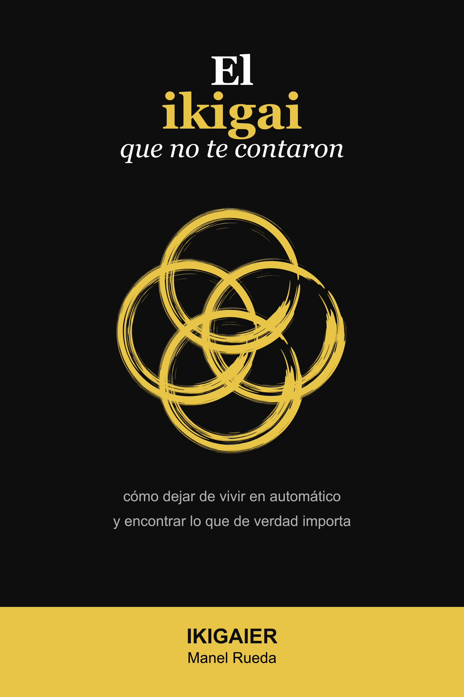
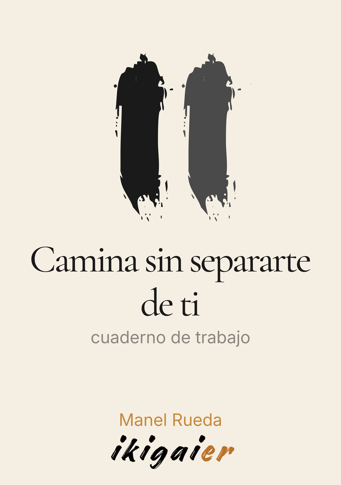

Un libro, un cuaderno, un camino
Una propuesta para unir el hacer y el ser.
La dirección y la presencia.
Sin fórmulas, sin promesas fáciles, sin atajos.
IKIGAIER nace como una mirada propia sobre el ikigai: una forma de unir acción, conciencia y verdad personal sin reducir el propósito a una fórmula rápida.
Durante años, el ikigai se ha presentado en Occidente como una intersección de círculos: lo que amas, lo que sabes hacer, lo que el mundo necesita y aquello por lo que pueden pagarte. Esa mirada puede ser útil, pero también puede quedarse corta si olvida algo esencial: no basta con encontrar una dirección externa si por dentro sigues lejos de ti.
El método IKIGAIER propone tender un puente entre el hacer y el ser. Por un lado, reconoce la importancia de actuar, construir, trabajar, decidir y aportar al mundo. Por otro, recuerda que una vida con sentido también necesita presencia, escucha, cuerpo, calma y arraigo.
Por eso este ecosistema no se limita a un libro. Incluye un cuaderno de trabajo, talleres y cartas de reflexión para que el propósito no se quede en una idea bonita, sino que pueda convertirse en una experiencia real, sencilla y practicable.

El ikigai que nos han vendido en Occidente es útil, pero incompleto. Y el ikigai japonés auténtico es profundo, pero a menudo inaccesible. Este libro tiende un puente entre los dos.
No desde la teoría, sino desde la práctica. No como quien enseña, sino como quien encontró algo y quiere compartirlo. Un viaje en tres actos que te lleva desde el piloto automático hasta una vida con dirección y arraigo.
Primera edición: abril de 2026 · Publicación independiente
La mayoría de las personas tienen una de las dos dimensiones más trabajada que la otra. Un ikigaier no elige: aprende a moverse en las dos.
La brújula que busca dirección, contribución y propósito externo. Responde al hacer: qué quiero construir, cómo puedo aportar, hacia dónde voy.
La raíz que no depende de logros ni metas. Responde al ser: estar presente, encontrar valor en lo cotidiano, sentir que tu vida vale tal como es.
Antes de avanzar, mirar dónde estás. Hacer silencio para oír lo que el ruido tapa.
Reconocer las pequeñas traiciones cotidianas. Sin juicio, sin drama.
Las protecciones que un día te ayudaron y hoy te limitan. Verlas para poder elegir.
El propósito no se piensa, se siente. La inteligencia que ya está en tu cuerpo.
No un plan de vida. Un gesto concreto, real, posible esta semana.
Dos piezas publicadas, dos en camino. Todas comparten la misma raíz: unir el hacer y el ser sin recetas ni promesas fáciles.
El libro completo. Una invitación a unir el hacer y el ser, sin recetas ni promesas fáciles. Disponible en castellano, catalán e inglés.
comprar en AmazonEl cuaderno de trabajo. Para hacer el viaje, no solo leerlo.
comprar en AmazonUn mazo de preguntas esenciales para usar en solitario o en grupo. Disparadores de reflexión para el día a día.
próximamenteEl complemento práctico de El Ikigai que no te contaron. Un cuaderno diseñado para que el método se convierta en experiencia real. Cinco gestos de ejercicios guiados, diarios de integración y herramientas para recorrer el camino del propósito a tu ritmo.

No necesitas haber leído el libro para usar este cuaderno. Es una invitación independiente a hacerte preguntas distintas. A parar. A escucharte.
Cinco gestos sencillos para que lo importante no quede tapado por lo urgente: parar y escuchar, mirar dónde te has alejado de ti, reconocer las máscaras que te sostienen, bajar de la mente al cuerpo, y cerrar eligiendo un primer paso.
Avanza con sesiones cortas de veinte a treinta minutos, repartidas a lo largo de varias semanas. Si quieres, compártelo con una persona de confianza. El cuaderno completo es para esta ruta.
Pensado para trabajarlo en grupo guiado. Incluye ejercicios para compartir con el grupo y dinámicas que el facilitador puede adaptar. El taller introduce y detona; el recorrido completo se hace después en solitario.
Disponible en Amazon · Publicación independiente · 2026
El método trabajado en directo. Un espacio guiado para recorrer las preguntas que el libro y el cuaderno proponen, en compañía de otras personas que están en el mismo punto. Presencial y online.
Una sesión guiada para abrir las preguntas, no para resolverlas. Lo que se mueve aquí continúa después con el cuaderno, el libro, o tu propio camino.
ver próxima sesiónManel Rueda no es escritor de oficio. Tiene una profesión, una rutina, una vida.
Escribe sobre las preguntas que aprendió a hacerse cuando dejó de buscar respuestas. Las comparte aquí contigo.
Vive cerca del Mediterráneo y no se considera un experto en ikigai. Se considera alguien que lo experimenta. «Hay una diferencia importante entre las dos cosas: creer es adoptar una idea; experimentar es dejar que una idea te cambie. De lo segundo nacen estos libros.»
Si te interesa lo que cuento, déjame tu email y te avisaré cuando haya nuevas piezas del ecosistema, próximas fechas de taller, o conversaciones sobre los temas del libro. Sin spam. Solo lo esencial.